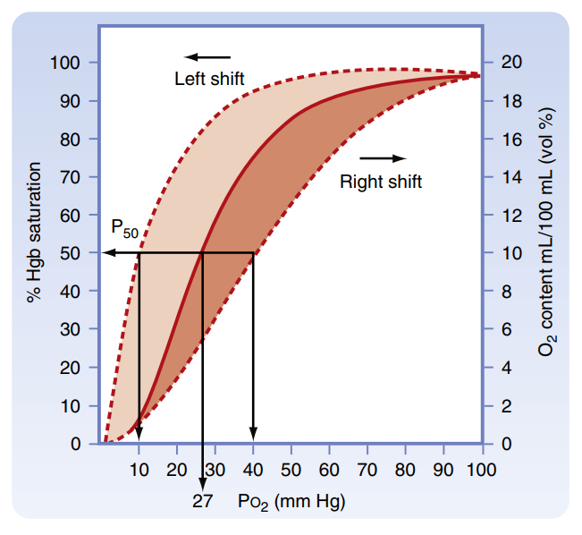
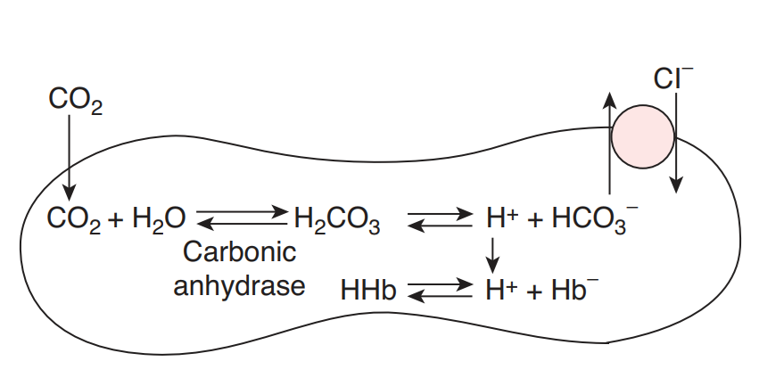
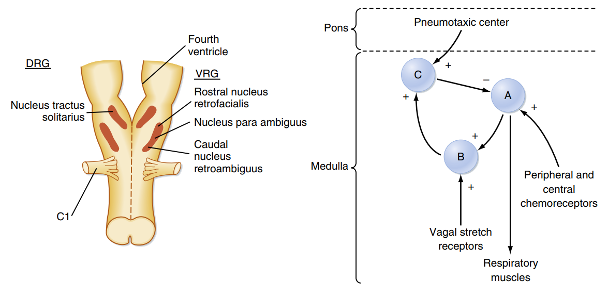
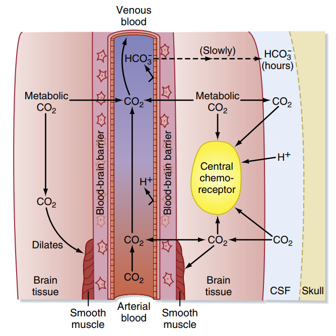

Sinh lý Vận chuyển khí trong máu & Điều hòa hô hấp
Phân tích cơ chế chuyên chở Oxy, Cacbonic, cấu trúc các thụ thể hóa học, các trung tâm thần kinh thân não điều hành thông khí.
Phần I: Vận chuyển Oxy (O2) trong máu
Khí Oxy (O2) khuếch tán từ phế nang phổi vào máu tĩnh mạch phổi được chuyên chở đến các mô cơ quan dưới hai dạng chính: dạng hòa tan vật lý trong huyết tương và dạng kết hợp hóa học với phân tử Hemoglobin (Hb) của hồng cầu.
- Dạng hòa tan vật lý: Chiếm tỷ lệ rất nhỏ, chỉ khoảng 3% tổng lượng oxy chuyên chở. Dù lượng nhỏ nhưng dạng hòa tan này đóng vai trò quyết định phân áp oxy hòa tan (PO2) trong máu động mạch, và chỉ có dạng hòa tan này mới có thể khuếch tán trực tiếp xuyên qua màng tế bào vào ti thể để tham gia chuỗi hô hấp tế bào.
- Dạng kết hợp với Hemoglobin (HbO2): Chiếm phần lớn, từ 95% đến 97% lượng oxy vận chuyển. Mỗi phân tử Hemoglobin chứa 4 nhân Heme với 4 ion sắt hóa trị hai (Fe2+) ở trung tâm, cho phép nó liên kết lỏng lẻo và thuận nghịch tối đa với 4 phân tử O2. Sự hiện diện của Hb làm tăng khả năng chuyên chở oxy của máu lên gấp 65 - 70 lần so với huyết tương hòa tan đơn thuần.
Đường cong phân ly Oxy-Hemoglobin (Đường cong Barcroft):
Mối tương quan giữa phân áp oxy hòa tan (PO2) và độ bão hòa Hemoglobin (SaO2%) được biểu diễn dưới dạng một đường cong hình chữ S đặc trưng (sigmoid). Hình thái này được tạo nên bởi **hiệu ứng hợp tác (cooperativity)**: khi một tiểu đơn vị Hb gắn với O2, nó sẽ làm thay đổi cấu hình không gian của phân tử Hb, làm tăng ái lực gắn của các tiểu đơn vị còn lại với các phân tử O2 tiếp theo.
- Tại phổi (PO2 cao, ≈100 mm Hg): SaO2 đạt mức bão hòa gần như hoàn toàn (≈98%). Đoạn nằm ngang của đường cong đảm bảo SaO2 vẫn duy trì cao ngay cả khi phân áp oxy phế nang giảm nhẹ.
- Tại mô (PO2 thấp, ≈40 mm Hg): Đường cong dốc đứng, chỉ cần sự sụt giảm nhỏ của PO2 ở mô sẽ kích thích phân ly giải phóng lượng lớn oxy từ Hb đưa sang tế bào sử dụng.
Tăng P50 (cần phân áp oxy cao hơn để bão hòa 50%). Giúp Hb dễ nhả oxy hơn
cho mô. Xảy ra khi:
• Tăng nồng độ H+ (giảm pH máu) → Hiệu ứng Bohr.
• Tăng phân áp CO2 (PCO2).
• Tăng nhiệt độ cục bộ tại mô.
• Tăng chất 2,3-DPG (sản phẩm đường phân hồng cầu khi thiếu
oxy hoặc vận động).
Giảm P50. Khiến Hb giữ oxy chặt hơn, cản trở sự nhả oxy cho mô. Xảy ra
khi:
• Giảm nồng độ H+ (tăng pH máu / kiềm chuyển hóa).
• Giảm phân áp CO2 (PCO2).
• Giảm nhiệt độ cơ thể.
• Giảm chất 2,3-DPG (ví dụ truyền máu cũ lưu trữ lâu ngày).
Khí CO có ái lực gắn kết với phân tử Hemoglobin mạnh gấp 200 - 210 lần so với khí Oxy. Khi hít phải CO, nó sẽ cạnh tranh chiếm đoạt vị trí gắn O2 trên nhân Heme. Hơn thế nữa, khi CO đã gắn vào một tiểu đơn vị, nó làm tăng ái lực gắn của các tiểu đơn vị còn lại với O2, dịch chuyển đường cong phân ly mạnh sang bên **trái**. Kết quả là Hb giữ chặt lấy oxy, không thể phóng thích O2 cho mô, gây thiếu oxy mô tế bào nghiêm trọng (ngạt hệ thống dù phân áp PO2 động mạch bình thường).

Phần II: Vận chuyển Carbon Dioxide (CO2) trong máu
Khí CO2 là sản phẩm thải của quá trình chuyển hóa năng lượng tế bào, khuếch tán từ mô vào máu mao mạch và được chuyên chở về phổi dưới 3 dạng chính:
- Dạng hòa tan vật lý trong huyết tương: Chiếm khoảng 5 - 7% lượng cacbonic chuyên chở. Dạng hòa tan này trực tiếp quyết định phân áp khí cacbonic động mạch (PCO2).
- Dạng kết hợp với Protein (Carbaminohemoglobin): Chiếm khoảng 11 - 23%. Khí CO2 gắn kết thuận nghịch vào các đầu amin tự do (-NH2) của chuỗi Globin trong phân tử Hemoglobin (tạo thành Carbaminohemoglobin) chứ không gắn vào vị trí nhân Heme.
- Dạng ion Bicarbonate (HCO3-): Đây là dạng vận chuyển lớn nhất, chiếm 63 - 70% lượng cacbonic.
Sự trao đổi ion Clorua (Chloride Shift / Hamburger Shift):
Khi CO2 đi vào bào tương hồng cầu, nó phản ứng với nước (H2O) dưới sự xúc tác của enzyme tốc độ cao Carbonic Anhydrase (CA) tạo thành H2CO3. Chất này phân ly ngay thành ion H+ và HCO3-.
Ion HCO3- tạo ra tích tụ nhiều trong hồng cầu và được đẩy ra ngoài huyết tương để vận chuyển nhờ kênh trao đổi anion xuyên màng AE1 (Band 3). Để giữ cân bằng điện tích màng tế bào, ion Cl- từ huyết tương đi ngược hướng di chuyển vào trong hồng cầu. Phản ứng đệm này tại mô làm lượng ion Cl- trong hồng cầu máu tĩnh mạch luôn cao hơn hồng cầu máu động mạch.
Hiệu ứng Haldane:
Sự gắn kết của oxy vào Hb tại phổi sẽ thúc đẩy sự phóng thích khí cacbonic ra ngoài phế nang. Ngược lại, việc nhả oxy của oxyhemoglobin tại mô làm xuất hiện dạng khử Deoxyhemoglobin. Deoxyhemoglobin là một acid yếu hơn oxyhemoglobin, do đó nó đóng vai trò chất đệm tốt, tăng gắn kết với ion H+ giải phóng từ phản ứng thủy hóa CO2, đồng thời tạo các hợp chất carbamino dễ dàng hơn. Nhờ đó, sự nhả O2 tại mô kích thích làm tăng khả năng mang và vận chuyển CO2 của máu (Hiệu ứng Haldane).

Phần III: Điều hòa hô hấp
Hoạt động thông khí phế nang được điều hòa tự động, liên tục bởi hệ thống thần kinh trung ương và các thụ thể phản hồi hóa học, cơ học nhằm duy trì phân áp khí PaO2, PaCO2 và pH máu ở ngưỡng hằng định sinh lý.
1. Các trung tâm hô hấp ở Thân não (Brainstem)
Các nhóm neuron phối hợp điều khiển hô hấp phân bố tại hành não và cầu não của thân não:
- Phức hợp Pre-Bötzinger (hành não): Nằm ở vùng bụng bên của hành não. Phức hợp này chứa các tế bào thần kinh tự tạo nhịp (pacemaker) phát xung động nhịp nhàng, là nguồn gốc phát sinh nhịp thở tự động cơ bản của cơ thể.
- Nhóm hô hấp lưng (DRG - Dorsal Respiratory Group): Nằm ở phần lưng hành não (nhân bó đơn độc). DRG chủ yếu chứa các neuron hít vào, phát xung động ly tâm điều khiển cơ hoành và cơ liên sườn ngoài co thắt, tạo thì hít vào thông thường.
- Nhóm hô hấp bụng (VRG - Ventral Respiratory Group): Nằm ở phần bụng hành não. Tham gia cả thì hít vào và thở ra gắng sức, hoạt động mạnh khi cơ thể tăng nhu cầu thông khí.
- Trung tâm điều chỉnh nhịp (Pneumotaxic center - cầu não): Nằm ở phần trên cầu não, gửi xung động ức chế đến DRG để giới hạn thời gian hít vào ("off-switch"), từ đó kiểm soát tần số và độ sâu của nhịp thở.
- Trung tâm ngưng thở (Apneustic center - cầu não): Nằm ở phần dưới cầu não, gửi xung động tạo thuận kéo dài thì hít vào.

2. Điều hòa hô hấp bằng Thụ thể hóa học (Chemoreceptors)
Hệ thống thụ thể hóa học giám sát thành phần hóa học của máu động mạch và dịch não tủy bao gồm hai nhóm:
• Vị trí: Nằm ở mặt bụng của hành não.
• Kích thích trực tiếp: Cực kỳ nhạy cảm với sự thay đổi nồng độ ion
H+ trong dịch não tủy (CSF).
• Cơ chế hàng rào: Ion H+ và HCO3- trong máu rất
khó đi qua hàng rào máu não (BBB). Ngược lại, khí CO2 hòa tan khuếch tán qua BBB rất dễ
dàng. Khi PaCO2 trong máu tăng, CO2 khuếch tán sang CSF phản ứng tạo ra ion
H+. Sự gia tăng H+ này kích thích thụ thể trung ương gửi luồng xung truyền về
các trung tâm hành não, phát động tăng thông khí đào thải CO2.
• Đặc điểm: PCO2 là nhân tố quan trọng nhất kiểm soát nhịp thở sinh lý
bình thường hàng ngày.
• Vị trí: Gồm thể cảnh (carotid bodies - ở chạc ba ĐM cảnh, dẫn truyền qua dây IX
thiệt hầu) và thể chủ (aortic bodies - ở quai ĐM chủ, dẫn truyền qua dây X phế vị).
• Kích thích chính: Nhạy cảm chủ yếu với tình trạng giảm oxy máu
(PaO2 giảm), đồng thời cũng phản ứng nhẹ với tăng PaCO2 và giảm pH.
• Đặc điểm: Kích thích tăng thông khí do giảm O2 chỉ thực sự rõ rệt và
mạnh mẽ khi phân áp PO2 động mạch giảm sâu xuống **dưới 60 - 75 mm Hg** (mức khởi động cơ
chế bù trừ hô hấp khẩn cấp).
Sự điều hòa thông khí phế nang đối với khí CO2 diễn ra gián tiếp qua hàng rào máu não. Khi nồng độ H+ máu tăng đơn thuần (toan chuyển hóa), hô hấp tăng kích thích yếu hơn vì ion H+ máu khó qua BBB. Ngược lại, toan hô hấp (tăng PaCO2 máu) làm tăng thông khí cực kỳ dữ dội vì khí CO2 tự do khuếch tán qua BBB tức thì, sinh ra H+ ngay trong lòng dịch não tủy kích hoạt trực tiếp các thụ thể trung ương hành não.

3. Điều hòa hô hấp bằng các phản xạ cơ học
- Phản xạ Hering-Breuer (Phản xạ căng phổi): Khi phổi bị căng giãn phồng quá mức (hít vào quá sâu), các thụ thể nhận cảm sức căng (stretch receptors) nằm ở cơ trơn thành đường dẫn khí sẽ bị kích thích. Luồng xung hướng tâm được truyền đi theo dây thần kinh phế vị (dây X) về hành não nhằm ức chế DRG, làm "cắt" thì hít vào để bắt đầu thở ra. Đây là cơ chế bảo vệ ngăn ngừa nhu mô phổi bị kéo giãn tổn thương cơ học.
- Thụ thể kích ứng và sợi C (J-receptors): Các thụ thể J (Juxtacapillary) nằm ở vách phế nang cạnh mao mạch phổi, nhạy cảm khi có ứ dịch kẽ phổi hoặc sự xuất hiện các hóa chất kích thích độc hại, bụi khói. Kích hoạt các thụ thể này sẽ phát động các phản xạ phòng vệ tức thời như ho, hắt hơi hoặc ngưng thở ngắn.
Tài liệu tham khảo
- Vũ TTQ. Sinh lý HÔ HẤP P2 YDS 2025 [Video recording]. Bs. Linh O'la Scar; 2025.
- Mai PT. Sinh lý MÁU P1 YDS 2025 [Video recording]. Bs. Linh O'la Scar; 2025.
- Mai PT. Sinh lý MÁU P2 YDS 2025 [Video recording]. Bs. Linh O'la Scar; 2025.
- Koeppen BM, Stanton BA. Berne and Levy Physiology. 8th ed. Elsevier; 2024.
- Silbernagl S, Despopoulos A. Color Atlas of Physiology. 6th ed. Thieme; 2009.
- Barrett KE, Barman SM, Boitano S, Brooks HL. Ganong's Review of Medical Physiology. 24th ed. McGraw-Hill Medical; 2012.